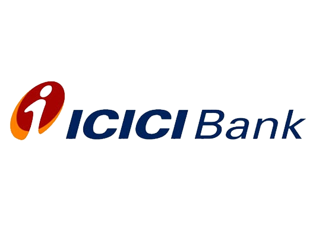

ICICI Bank
ICICI Bank Limited is an Indian multinational bank and financial services company headquartered in the city of Vadodara, India. It offers a wide range of banking products and financial services for corporate and retail customers through a variety of delivery channels and specialized subsidiaries in the areas of investment banking, life, non-life insurance, venture capital and asset management. The bank has a network of 5,275 branches and 15,589 ATMs across India and has a presence in 17 countries.[9] The bank has subsidiaries in the United Kingdom and Canada; branches in United States, Singapore, Bahrain, Hong Kong, Qatar, Oman, Dubai International Finance Centre, China[10] and South Africa;[11] as well as representative offices in United Arab Emirates, Bangladesh, Malaysia and Indonesia. The company's UK subsidiary has also established branches in Belgium and Germany.[12]
History
ICICI Bank was established by the Industrial Credit and Investment Corporation of India (ICICI), an Indian financial institution, as a wholly owned subsidiary in 1994 in Vadodara however the parent company was formed in 1955 as a joint-venture of the World Bank, India's public-sector banks and public-sector insurance companies to provide project financing to Indian industry.[13][14] The bank was founded as the Industrial Credit and Investment Corporation of India Bank, before it changed its name to ICICI Bank. The parent company was later merged with the bank. The Industrial Credit and Investment Corporation of India (ICICI) was established on 5 January 1955 and Sir Arcot Ramasamy Mudaliar was elected as the first Chairman of ICICI Ltd. ICICI Bank launched Internet Banking operations in 1998.[15] ICICI's shareholding in ICICI Bank was reduced to 46% through a public offering of shares in India in 1998, followed by an equity offering in the form of American depositary receipts on the NYSE in 2000.[16] ICICI Bank acquired the Bank of Madura Limited in an all-stock deal in 2001 and sold additional stakes to institutional investors during 2001–02.[17] In the 1990s, ICICI transformed its business from a development financial institution offering only project finance to a diversified financial services group, offering a wide variety of products and services, both directly and through a number of subsidiaries and affiliates like ICICI Bank. In 1999, ICICI become the first Indian company and the first bank or a financial institution from non-Japan Asia to be listed on the NYSE.[18]
PRODUVTS
ICICI Bank offers products and services such as online money transfers, tracking services, current accounts, savings accounts,[38] time deposits, recurring deposits, mortgages, loans, automated lockers, credit cards, prepaid cards, debit cards and digital wallets called ICICI pocket.[39] ICICI bank launched 'ICICIStack' which provides online services such as payment options, digital accounts, instant car loans, insurance, investments, loans etc.[40]